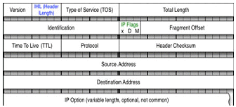
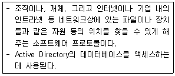
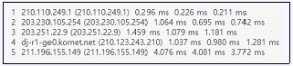
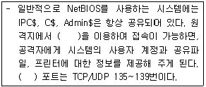
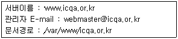
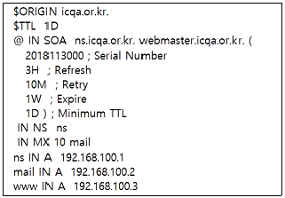

네트워크관리사-1급 (2019-10-27 기출문제)
1과목: TCP/IP
1. 네트워크 ID '210.182.73.0'을 몇 개의 서브넷으로 나누고, 각 서브넷은 적어도 40개 이상의 Host ID를 필요로 한다. 적절한 서브넷 마스크 값은?
- 255.255.255.192
- 255.255.255.224
- 255.255.255.240
- 255.255.255.248
(정답률: 71%)

2. IPv6 주소 체계의 종류로 옳지 않은 것은?
- Unicast 주소
- Anycast 주소
- Multicast 주소
- Broadcast 주소
(정답률: 65%)
3. IP 헤더 필드들 중 처리량, 전달 지연, 신뢰성, 우선순위 등을 지정해 주는 것은?

- IHL(IP Header Length)
- TOS(Type of Service)
- TTL(Time To Live)
- Header Checksum
(정답률: 64%)
4. TCP(Transmission Control Protocol)에 대한 설명으로 옳지 않은 것은?
- 네트워크에서 송신측과 수신측간에 신뢰성 있는 전송을 확인한다.
- 연결지향(Connection Oriented)이다.
- 송신측은 데이터를 패킷으로 나누어 일련번호, 수신측 주소, 에러검출코드를 추가한다.
- 수신측은 수신된 데이터의 에러를 검사하여 에러가 있으면 스스로 수정한다.
(정답률: 79%)
5. ARP의 기능에 대한 설명 중 옳지 않은 것은?
- 모든 호스트가 성공적으로 통신하기 위해서 각 하드웨어의 물리적인 주소문제를 해결하기 위해 사용된다.
- 목적지 호스트의 IP Address를 MAC Address로 바꾸는 역할을 하며, 목적지 호스트가 시작지의 IP Address를 MAC Address로 바꾸는 것을 보장한다.
- 기본적으로 ARP 캐시(Cache)를 사용하지 않으며, 매번 서버와 통신할 때 마다 MAC Address를 요구한다.
- ARP 캐시(Cache)는 MAC Address와 IP Address의 리스트를 저장한다.
(정답률: 72%)
6. ICMP에 대한 설명 중 올바른 것은?
- IP에서의 오류(Error) 제어를 위하여 사용되며, 시작지 호스트의 라우팅 실패를 보고한다.
- TCP/IP 프로토콜에서 데이터의 전송 서비스를 규정한다.
- TCP/IP 프로토콜의 IP에서 접속없이 데이터의 전송을 수행하는 기능을 규정한다.
- 네트워크의 구성원에 패킷을 보내기 위한 하드웨어 주소를 정한다.
(정답률: 68%)
7. DNS에 관한 설명으로 옳지 않은 것은?
- DNS는 최상위에 루트 노드를 갖는 계층구조의 트리 형태를 갖추고 있으며 최대 128개의 계층(level)을 가질 수 있다.
- DNS에서 1차 서버 (Primary Server)는 자신의 권역(Zone)에 대한 정보의 생성, 관리, 업데이트를 맡고 있다.
- DNS 메시지에는 모두 쿼리(Query)와 응답(Response)의 두 가지 종류가 있다.
- DNS에서는 하위 계층 프로토콜로써 UDP만 사용한다.
(정답률: 79%)
8. RIP에 대한 설명으로 옳지 않은 것은?
- 독립적인 네트워크 내에서 라우팅 정보 관리를 위해 광범위하게 사용된 프로토콜이다.
- 자신이 속해 있는 네트워크에 매 30초마다 라우팅 정보를 브로드캐스팅(Broadcasting) 한다.
- 네트워크 거리를 결정하는 방법으로 홉의 총계를 사용한다.
- 대규모 네트워크에서 최적의 해결방안이다.
(정답률: 74%)
9. TFTP에 대한 설명으로 올바른 것은?
- TCP/IP 프로토콜에서 데이터의 전송 서비스를 규정한다.
- 인터넷상에서 전자우편(E-mail)의 전송을 규정한다.
- UDP 프로토콜을 사용하여 두 호스트 사이에 파일 전송을 가능하게 해준다.
- 네트워크의 구성원에 패킷을 보내기 위한 하드웨어 주소를 정한다.
(정답률: 62%)
10. UDP의 특징으로 옳지 않은 것은?
- 비연결형 서비스이다.
- ACK를 사용하지 않는다.
- 체크섬 필드가 필요없다.
- 경량의 오버헤드를 갖는다.
(정답률: 50%)
11. 전자 메일의 안정적인 전송을 위해 제안된 프로토콜로 RFC 821에 규정되어 있는 메일 전송 프로토콜은?
- POP3
- IMAP
- SMTP
- NNTP
(정답률: 69%)
12. SNMP에 대한 설명 중 올바른 것은?
- TCP/IP 프로토콜의 IP에서 접속 없이 데이터의 전송을 수행하는 기능을 규정한다.
- 시작지 호스트에서 여러 목적지 호스트로 데이터를 전송할 때 사용된다.
- IP에서의 오류(Error)제어를 위하여 사용되며, 시작지 호스트의 라우팅 실패를 보고한다.
- 네트워크의 장비로부터 데이터를 수집하여 네트워크의 관리를 지원하고 성능을 향상시킨다.
(정답률: 75%)
13. IPv6에 대한 설명으로 옳지 않은 것은?
- IPv6는 IPng(Next Generation IP)로 개발된 버전 중의 하나이다.
- IPv6는 일련의 IETF 공식 규격이다.
- IPv6는 IP Address의 길이가 256bit이다.
- IPv4에 비해 주소 길이가 증가하고 보안, 실시간 전송, 흐름 제어 등이 고려되었다.
(정답률: 80%)
14. TCP/IP에 대한 설명으로 옳지 않은 것은?
- TCP는 데이터링크계층(Data Link Layer) 프로토콜이다.
- IP는 네트워크계층(Network Layer)의 프로토콜이다.
- TCP는 전송 및 에러검출을 담당한다.
- Telnet과 FTP는 모두 TCP/IP 프로토콜이다.
(정답률: 67%)
15. IGMP 패킷의 필드에 대한 설명 중 옳지 않은 것은?
- 체크섬(Checksum)은 데이터가 전송도중에 문제가 생기지 않았음을 보장하는 역할을 한다.
- Message Type은 질의 보고서 등의 메시지 종류를 나타내는데 사용된다.
- Version 필드에는 값이 0으로 설정된다.
- 그룹동보통신에 포함된 그룹에서 질의를 요청할 때 이 필드는 모든 값이 0으로 설정된다.
(정답률: 49%)
16. IP Address ′128.10.2.3′을 바이너리 코드로 변환한 값은?
- 11000000 00001010 00000010 00000011
- 10000000 00001010 00000010 00000011
- 10000000 10001010 00000010 00000011
- 10000000 00001010 10000010 00000011
(정답률: 80%)
2과목: 네트워크 일반
17. B Class에 대한 설명 중 옳지 않은 것은?
- Network ID는 128.0 ~ 191.255 이고, Host ID는 0.1 ~ 255.254 가 된다.
- IP Address가 150.32.25.3인 경우, Network ID는 150.32 Host ID는 25.3 이 된다.
- Multicast 등과 같이 특수한 기능이나 실험을 위해 사용된다.
- Host ID가 255.255일 때는 메시지가 네트워크 전체로 브로드 캐스트 된다.
(정답률: 65%)
18. 아날로그 데이터를 디지털 전송 신호로 보낼 때 양자화 시키는 일반적인 기법은?
- PCM
- FSK
- QPSK
- PSK
(정답률: 64%)
19. 전송한 프레임의 순서에 관계없이 단지 손실된 프레임만을 재전송하는 방식은?
- Selective-repeat ARQ
- Stop-and-wait ARQ
- Go-back-N ARQ
- Adaptive ARQ
(정답률: 73%)
20. 주파수 분할 다중화 기법을 이용해 하나의 전송매체에 여러 개의 데이터 채널을 제공하는 전송방식은?
- 브로드밴드
- 내로우밴드
- 베이스밴드
- 하이퍼밴드
(정답률: 78%)
21. 여러 개의 타임 슬롯(Time Slot)으로 하나의 프레임이 구성되며 각 타임 슬롯에 채널을 할당하여 다중화하는 것은?
- TDMA
- CDMA
- FDMA
- CSMA
(정답률: 68%)
22. 물리계층의 역할이 아닌 것은?
- 전송매체를 통해서 시스템들을 물리적으로 연결한다.
- 자신에게 온 비트들이 순서대로 전송될 수 있도록 한다.
- 전송, 형식 및 운영에서의 에러를 검색한다.
- 물리적 연결과 동작으로 물리적 링크를 제어한다.
(정답률: 75%)
23. 네트워크 계층에서 데이터의 단위는?
- 트래픽
- 프레임
- 세그먼트
- 패킷
(정답률: 76%)
24. 광케이블을 이용하는 통신에서 저손실의 파장대를 이용하여 광 파장이 서로 다른 복수의 광 신호를 한 가닥의 광섬유에 다중화 시키는 방식은?
- 코드 분할 다중 방식(CDM)
- 직교 분할 다중 방식(OFDM)
- 시간 분할 다중 방식(TDM)
- 파장 분할 다중 방식(WDM)
(정답률: 77%)
25. 채널 Access 방법 중 동일 주파수 대역으로 가장 용량이 큰 채널 Access 방법은?
- CDMA
- TDMA
- FDMA
- FDM
(정답률: 44%)
26. 데이터 전송 운영 방법에서 수신측에 n개의 데이터 블록을 수신할 수 있는 버퍼 저장 공간을 확보하고, 송신측은 확인신호 없이 n개의 데이터 블록을 전송하며, 수신측은 버퍼가 찬 경우 제어정보를 송신측에 보내서 송신을 일시 정지시키는 흐름제어는?
- 블록
- 모듈러
- Xon/Xoff
- Window
(정답률: 58%)
27. 국제표준화기구 중 주로 근거리 통신망(LAN)에 대한 표준화를 담당하는 곳은?
- ITU
- ISO
- ANSI
- IEEE
(정답률: 73%)
3과목: NOS
28. Linux 시스템의 기본 디렉터리에 대한 설명으로 옳지 않은 것은?
- /etc : 시스템 설정과 관련된 파일이 저장된다.
- /dev : 시스템의 각종 디바이스에 대한 드라이버들이 저장된다.
- /var : 시스템에 대한 로그와 큐가 쌓인다.
- /usr : 각 유저의 홈 디렉터리가 위치한다.
(정답률: 62%)
29. Linux와 이기종의 파일 시스템이나 프린터를 공유하기 위해 설치하는 서버 및 클라이언트 프로그램은?
- 삼바(SAMBA)
- 아파치(Apache)
- 샌드메일(Sendmail)
- 바인드(BIND)
(정답률: 70%)
30. 아래의 내용에서 설명하는 프로토콜은?

- DHCP
- SNMP
- LDAP
- Kerberos 버전5
(정답률: 59%)
31. 아래 내용은 Linux의 어떤 명령을 사용한 결과인가?

- ping
- nslookup
- traceroute
- route
(정답률: 69%)
32. Linux에서 kill 명령어를 사용하여 해당 프로세스를 중단되도록 하려고 하는데, 중단하고자 하는 프로세스의 번호(PID)를 모를 경우 사용하는 명령어는?
- ps
- man
- help
- ls
(정답률: 66%)
33. Linux 시스템에서는 하드디스크 및 USB, CD-ROM 등을 마운트(Mount) 해야만 사용할 수 있다. 시스템 부팅시 이와 같은 파일시스템을 자동으로 마운트하기 위한 설정 파일로 올바른 것은?
- /etc/fstab
- /etc/services
- /etc/filesystem
- /etc/mount
(정답률: 60%)
34. 아파치(Apache) 웹 서버 운영시 서비스에 필요한 여러 기능들을 설정하는 파일은?
- httpd.conf
- htdocs.conf
- index.php
- index.cgi
(정답률: 75%)
35. Linux의 ′vi′ 명령어 중 변경된 내용을 저장한 후 종료하고자 할 때 사용해야 할 명령어는?
- :wq
- :q!
- :e!
- $
(정답률: 79%)
36. TCP 3Way-HandShaking 과정 중 클라이언트가 보낸 연결 요청에서 패킷을 수신한 서버는 LISTEN 상태에서 무슨 상태로 변경되는가?
- SYN_SENT
- SYN_RECEIVED
- ESTABLISHED
- CLOSE
(정답률: 62%)
37. Windows Server 2008 R2의 이벤트 뷰어에서 보안 로그 필터링시 사용할 수 있는 이벤트 수준으로 옳지 않은 것은?
- 중요
- 경고
- 오류
- 정보
(정답률: 41%)
38. Linux 시스템의 전반적인 상태를 실시간으로 프로세스들을 관리하거나 시스템 사용량을 모니터링할 수 있는 명령어는?
- ps
- top
- kill
- nice
(정답률: 46%)
39. 다음 중 보기의 내용 중 ( ) 괄호 안에 들어갈 수 있는 것은?

- Null Session
- MySQL Session
- kovasb Session
- training Session
(정답률: 47%)
40. Apache 웹서버에서 다음의 조건을 만족하는 가상 호스팅의 설정으로 올바른 것은?

- ServerName www.icqa.or.kr
ServerEmail webmaster@icqa.or.kr
DocumentPath /var/www/icqa.or.kr - ServerName www.icqa.or.kr
ServerAdmin webmaster@icqa.or.kr
DocumentRoot /var/www/icqa.or.kr - DomainName www.icqa.or.kr
ServerAdmin webmaster@icqa.or.kr
DocumentRoot /var/www/icqa.or.kr - DomainName www.icqa.or.kr
AdminAddress webmaster@icqa.or.kr
DocumentPath /var/www/icqa.or.kr
(정답률: 41%)
41. bind 패키지를 이용하여 네임서버를 구축할 경우 ′/var/named/icqa.or.kr.zone′의 내용이다. 설정의 설명으로 옳지 않은 것은?

- ZONE 파일의 영역명은 ′icqa.or.kr′ 이다.
- 관리자의 E-Mail 주소는 ′webmaster.icqa.or.kr′ 이다.
- 메일 서버는 10번째 우선순위를 가진다.
- ′www′ 의 FQDN은 ′www.icqa.or.kr′ 이다.
(정답률: 55%)
42. Linux 파일 내에서 특정 패턴을 검사하는 명령어는?
- find
- cp
- grep
- check
(정답률: 46%)
43. Windows Server 2008 R2에서 User계정으로 암호화 파일을 만들고 Administrator 계정으로 접근하였을 때, 다음 설명 중에서 올바른 것은?
- 암호화 파일 속성을 변경할 수 있다.
- 암호화 파일을 복사할 수 있다.
- 암호화 파일 내용을 볼 수 있다.
- 암호화 파일의 속성, 내용을 보고자 할 때 거부 메시지가 나타난다.
(정답률: 61%)
44. Windows Server 2008 R2 운영 시 보안을 위한 조치로 적절하지 않은 것은?
- 가급적 서버의 서비스들을 많이 활성화시켜 둔다.
- 비즈니스 자원과 서비스를 분리한다.
- 사용자에게는 임무를 수행할 만큼의 최소 권한만 부여한다.
- 변경사항을 적용하기 전에 정책을 가지고 검사한다.
(정답률: 78%)
45. Windows Server 2008 R2 시스템에서 발생한 사건을 추적하는데 사용되는 최적의 방법으로 파일 접근, 시스템 로그온, 시스템 구성 변경과 같은 자원 사용에 관련된 정보를 수집하는데 감사를 사용할 수 있다. 감사를 구성한 동작이 발생하면 동작은 시스템의 어느 로그에 기록되는가?
- 전달된 이벤트 로그
- 보안 로그
- 응용프로그램 로그
- 설치 로그
(정답률: 54%)
4과목: 네트워크 운용기기
46. 전송매체인 광섬유 케이블의 특징이 아닌 것은?
- 전송 대역폭이 넓어 초고속 전송에 유리하다.
- 전자파의 간섭이 없다.
- 전자기적 누화가 많다.
- 보안성이 우수하고, 데이터 손실이 적다.
(정답률: 73%)
47. 다음 중 라우터(Router) 접속 방법이 아닌 것은?
- 콘솔포트 접속
- 원격(Telnet) 접속
- 병렬포트 접속
- AUX 포트로 접속
(정답률: 49%)
48. 다음 중 NAC(Network Access Control)의 주요 기능에 해당되지 않는 것은?
- 네트워크의 모든 IP 기반 장치 접근 제어
- PC 및 네트워크 장치 통제(무결성 체크)
- 외부 유저 역할 기반의 접근 제어
- 유해 트래픽 탐지 및 차단
(정답률: 47%)
49. 리피터의 설명으로 올바르지 않는 것은?
- 전기나 광 신호만을 다루기 때문에 서로 다른 네트워크 구조를 연결하는 목적에도 사용할 수 있다.
- 리피터는 단지 신호를 증폭시키는 단순 리피터와 전송 신호만을 증폭시키는 신호 재생 리피터의 두 종류가 있다.
- 전송 받은 신호를 신호 재생, 신호 증폭하여 재 전송하는 장비이다.
- OSI 참조 모델의 물리 계층에서 동작하는 장치이며, 신호를 필터링 하거나 해석할 수 있다.
(정답률: 43%)
50. 각 장치에 허브(hub)라는 중앙 제어기와 점-대-점 링크로 구성하는 토폴로지는 무엇인가?
- Bus Topology
- Tree Topology
- Star Topology
- Ring Topology
(정답률: 68%)
5과목: 정보보호개론
51. 라우터(Router)를 이용한 네트워크 보안 설정 방법 중에서 내부 네트워크로 유입되는 패킷의 소스 IP나 목적지 포트 등을 체크하여 적용하거나 거부하도록 필터링 과정을 수행하는 것은? (Standard 또는 Extended Access-List 사용)
- Ingress Filtering
- Egress Filtering
- Unicast RFP
- Packet Sniffing
(정답률: 56%)
52. Secure Sockets Layer 버전 3.0에 존재하는 취약점을 이용하면 공격자는 패딩 오라클 공격에 의해 암호화 통신의 일부(주로 쿠키 정보)를 해독할 수 있다. 이 취약점의 이름은?
- POODLE 취약점
- heart bleed 취약점
- Bicycle 취약점
- freak 취약점
(정답률: 41%)
53. 공격자 혼자 공격하는 것이 아닌 좀비PC를 이용하는 등의 방법으로 다수의 Host가 한 대의 Server 등을 공격하여 컴퓨터 및 네트워크가 정상적인 서비스를 하지 못하게 만드는 공격은 무엇인가?
- Phishing
- Pharming
- Smishing
- DDos
(정답률: 83%)
54. 암호학과 관련된 설명 중 잘못 기술한 것은?
- 코드(code) : 부호라고도 하며 통신과 정보 처리에서 정보를 나타내기 위한 기호체계
- 스테가노그래픽(Steganography) : 정보를 은닉하여 숨기는 기술이며 자신의 정보를 숨겨서 남이 보지 못하도록 하는 기술
- 해쉬함수 (Hash function) : 임의의 데이터로부터 고정된 짧은 길이의 해쉬값을 출력하는 함수이며 출력된 해쉬값으로 입력값을 계산하는 것은 어려운 함수
- 인증서 : 사용자의 신분과 공개키를 연결해 주는 문서로 인증기관의 공개키로 전자서명하여 생성됨
(정답률: 26%)
55. 다음 중 VPN의 장점이 아닌 것은?
- 터널링과 보안 프로토콜을 통한 데이터의 기밀유지 가능
- 공중망을 이용하여 저렴한 비용으로 전용망과 같은 효과
- signature를 기반으로 한 공격탐지
- 공중망을 통한 연결을 전용망처럼 이용하는 가설사설망
(정답률: 65%)
56. 'Brute Force' 공격에 대한 설명으로 올바른 것은?
- 암호문을 풀기 위해 모든 가능한 암호 키 조합을 적용해 보는 시도이다.
- 대량의 트래픽을 유발해 네트워크 대역폭을 점유하는 형태의 공격이다.
- 네트워크상의 패킷을 가로채 내용을 분석해 정보를 알아내는 행위이다.
- 공개 소프트웨어를 통해 다른 사람의 컴퓨터에 침입하여 개인정보를 빼내는 행위이다
(정답률: 71%)
57. 분산 환경에서 클라이언트와 서버 간에 상호 인증기능을 제공하며 DES 암호화 기반의 제3자 인증 프로토콜은?
- Kerberos
- Digital Signature
- PGP
- Firewall
(정답률: 57%)
58. 웹의 보안 기술 중 네트워크 내에서 메시지 전송의 안전을 관리하기 위해 네스케이프에서 만들어진 프로토콜로 HTTP에서 가장 많이 사용되며 RSA 암호화 기법을 이용하여 암호화된 정보를 새로운 암호화 소켓으로 전송하는 방식은?
- PGP
- SSL
- STT
- SET
(정답률: 78%)
59. 다음 중 스니핑(Sniffing) 해킹 방법에 대한 설명으로 가장 올바른 것은?
- Ethernet Device 모드를 Promiscuous 모드로 전환하여 해당 호스트를 거치는 모든 패킷을 모니터링 한다.
- TCP/IP 패킷의 내용을 변조하여 자신을 위장한다.
- 스텝 영역에 Strcpy와 같은 함수를 이용해 넘겨받은 인자를 복사함으로써 스택 포인터가 가리키는 영역을 변조한다.
- 클라이언트로 하여금 다른 Java Applet을 실행시키도록 한다.
(정답률: 66%)
60. Linux의 서비스 포트 설정과 관련된 것은?
- /etc/services
- /etc/pam.d
- /etc/rc5.d
- /etc/service.conf
(정답률: 61%)
2의 n승 형태로 나누면서 적절한 서브넷 마스크 값을 찾아보면, 255.255.255.192가 적합하다. 이는 11111111.11111111.11111111.11000000의 이진수로 표현되며, 26비트가 네트워크 ID를 나타내고, 6비트가 Host ID를 나타낸다. 따라서 이 서브넷 마스크를 사용하면 총 4개의 서브넷을 만들 수 있고, 각 서브넷은 62개의 Host ID를 사용할 수 있다. 이는 문제에서 요구한 40개 이상의 Host ID를 필요로 하는 서브넷을 만족시키며, 불필요한 IP 주소 낭비를 최소화할 수 있다.